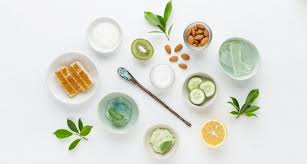

Kecantikan sejati bukan hanya soal penampilan luar, tetapi juga kesehatan tubuh dan pikiran. Dengan perawatan yang tepat dan pola hidup sehat, setiap orang bisa memancarkan kecantikan alami mereka.
1. Menjaga Kulit dengan Bahan Alami
Gunakan bahan alami seperti madu, lidah buaya, atau air mawar untuk menjaga kelembapan kulit. Hindari penggunaan produk yang mengandung bahan kimia keras yang bisa merusak lapisan kulit.
2. Pola Makan Sehat untuk Kulit Bercahaya
Kecantikan berasal dari dalam tubuh. Konsumsi buah dan sayur yang kaya vitamin C, E, dan antioksidan seperti jeruk, alpukat, dan wortel. Minum air putih minimal 8 gelas per hari agar kulit tetap segar.

3. Tidur yang Cukup
Tidur yang cukup membantu memperbaiki sel-sel kulit yang rusak dan mencegah munculnya lingkaran hitam di bawah mata. Usahakan tidur 7–8 jam setiap malam untuk wajah yang segar di pagi hari.
4. Kecantikan dari Dalam Diri
Senyum tulus, hati yang tenang, dan rasa percaya diri adalah bagian dari kecantikan sejati. Ketika seseorang bahagia dan bersyukur, kecantikannya akan terpancar secara alami.
Kesimpulan: Kecantikan alami bisa diraih siapa saja tanpa harus bergantung pada produk mahal. Rawat diri dengan pola hidup sehat, tidur cukup, dan pikiran positif — maka kecantikan sejati akan terpancar dengan sendirinya.